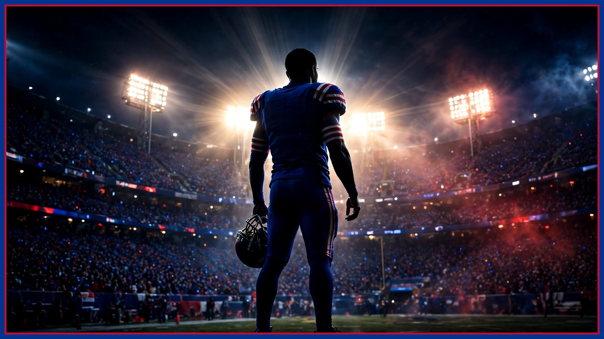

Trade deadline board: 5 names, one per day, starting with the secondary
The Nov. 10 deadline is coming and Buffalo's cap room is not. A week-long series on who fits, who doesn't, and who is a fantasy — starting where the need is obvious.

The NFL trade deadline hits Nov. 10, and for the next five weekdays this series will put one name on the board per day — a real fit, a real price, and a real verdict. Today is the overview, and it starts with the position everybody in Buffalo is already looking at: the secondary.
The need is not subtle. C.J. Gardner-Johnson's suspension was upheld, which puts him out for the Ravens game on Nov. 1 and eligible to return Nov. 2 — a short absence, but a revealing one, because it showed how thin the margin is behind the starters. Christian Benford has had a harder season than his reputation suggests. Tre'Davious White is on the practice squad. You don't need a film degree to see where the front office is shopping.
Now the constraint that runs this whole series: money. Buffalo's available cap space sits around $4.1 million, which means every name on this board has to survive two tests — the acquisition cost in draft capital, and the contract cost in real cap room. The fantasy trades filling your timeline fail at least one of those tests. The five names in this series pass both, at least on paper.
The names analysts have linked to Buffalo's situation tell you the shape of the market: veteran safety help like Arizona's Budda Baker at the expensive end, younger options like the Jets' Andre Cisco in the middle, and a corner like Philadelphia's Riq Woolen as the swing-for-upside play. Whether any of those specific players move is a different question — this week we'll work through the secondary option first, then the rest of the board, one honest evaluation at a time.
Two ground rules for the series. First, no name appears here without a plausible cap path — if the money doesn't work, we'll say so and move on. Second, standing pat is a legitimate outcome. A 5-1 team with a defense ranked 31st in yards sounds like a buyer, and it probably is, but a bad trade is worse than no trade, and Buffalo's recent history says this front office would rather overpay in April than in November.
There's also a wide receiver wrinkle we'll get to mid-series: Joshua Palmer's name has surfaced in trade-candidate chatter from the other direction — as a player Buffalo could move. That's a harder conversation than the secondary shopping, and it deserves its own day.
The board starts tomorrow with the secondary target who fits best. Five days, five names, no fantasy football. If Buffalo does nothing by Nov. 10, you'll at least know exactly what nothing cost — and what it saved.